#1
INTERACTION
ADVANCED🎮 DIAL
DL1
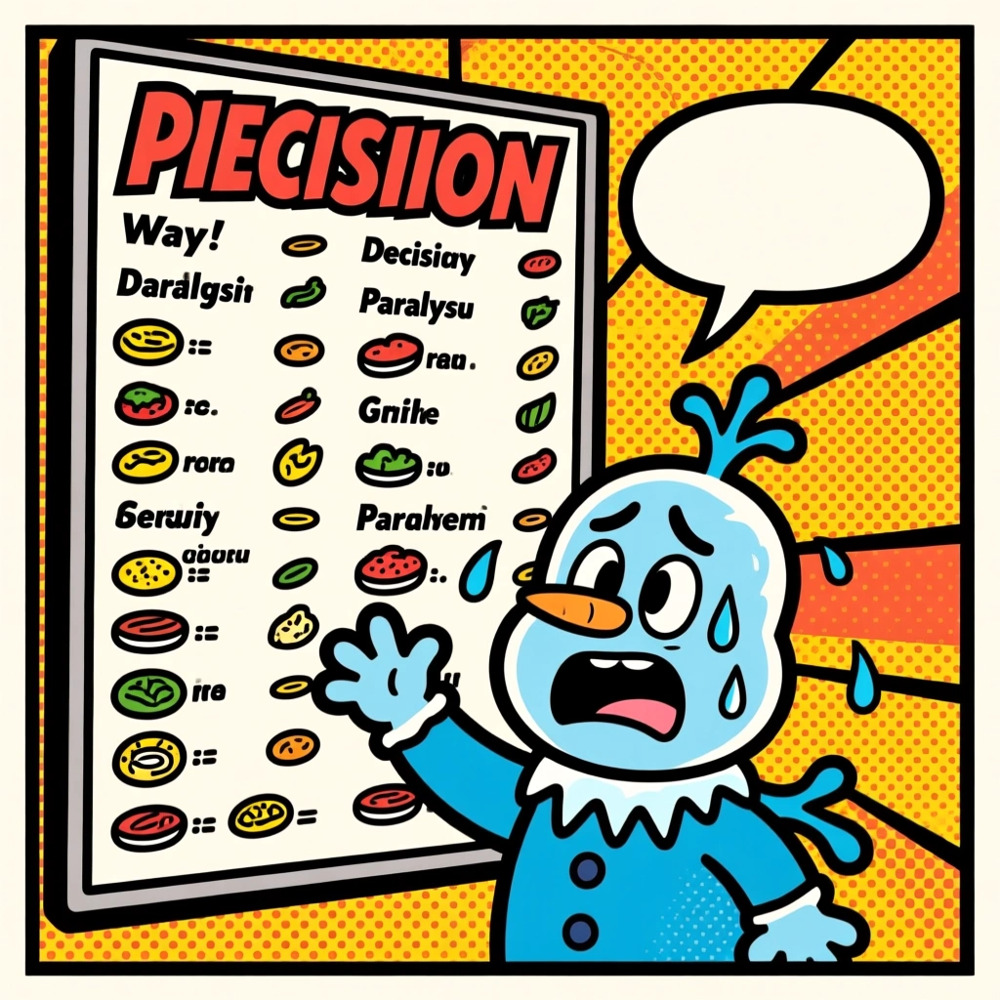
Turn the dial to the number of menu choices that's fastest to decide from.
把旋钮转到「最容易快速做决定」的菜单选项数量。
- ✓ target 2–4 (range 2–12)
WHY Hick's Law: more choices = slower decisions. Few, clear options win.
Hick 定律：选项越多决定越慢。少而清晰更优。
#2
FEED UX
BASIC🎮 DIAL
DL2
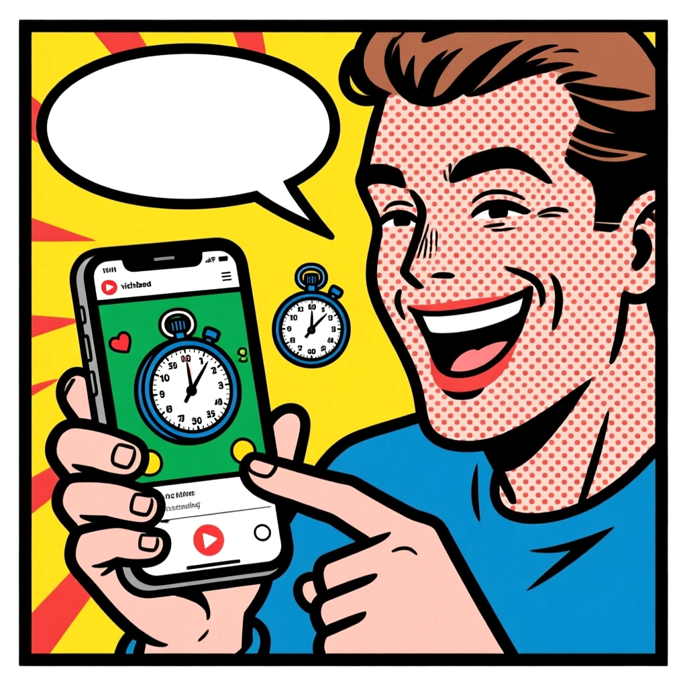
Turn the dial to how many seconds you've got before a feed player swipes away.
把旋钮转到：feed 玩家划走前你大约有几秒。
- ✓ target 1–3s (range 1–20)
WHY ~2 seconds. Zero context, near-zero patience — be instantly graspable.
约 2 秒。零上下文、近乎零耐心——必须即点即懂。
#3
CORE DESIGN
ADVANCED🎮 LEVER
LV1
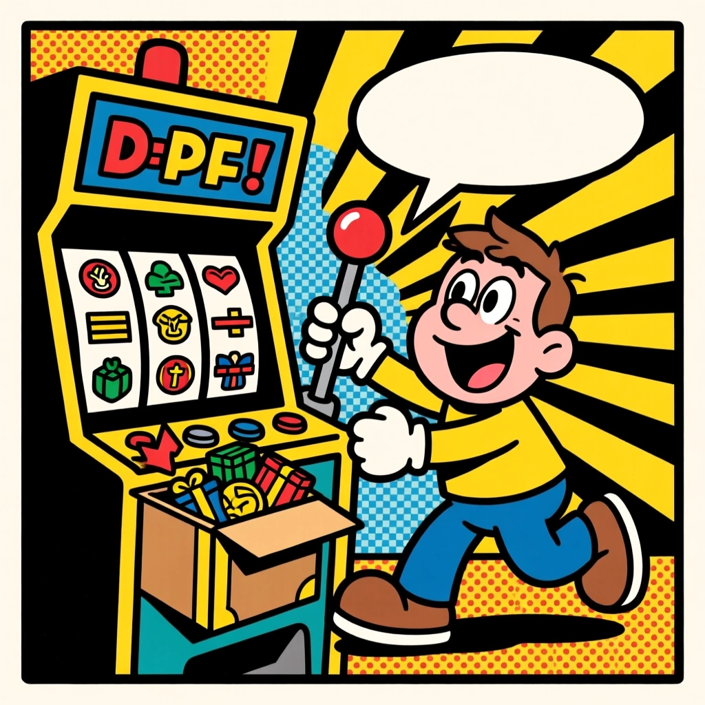
Three reward machines. Pull the one that keeps players hooked.
三台奖励机。拉下最能让玩家上瘾的那台。
- Every tap pays the same每次点击都给固定奖励
- ✓ Random surprise payout随机惊喜奖励
- Pays only at the very end只在最后才给
WHY Variable / intermittent reward is the strongest hook — the slot-machine effect.
可变（间歇）奖励最上头——老虎机效应。
#4
INTERACTION
ADVANCED🎮 SLIDER
S3
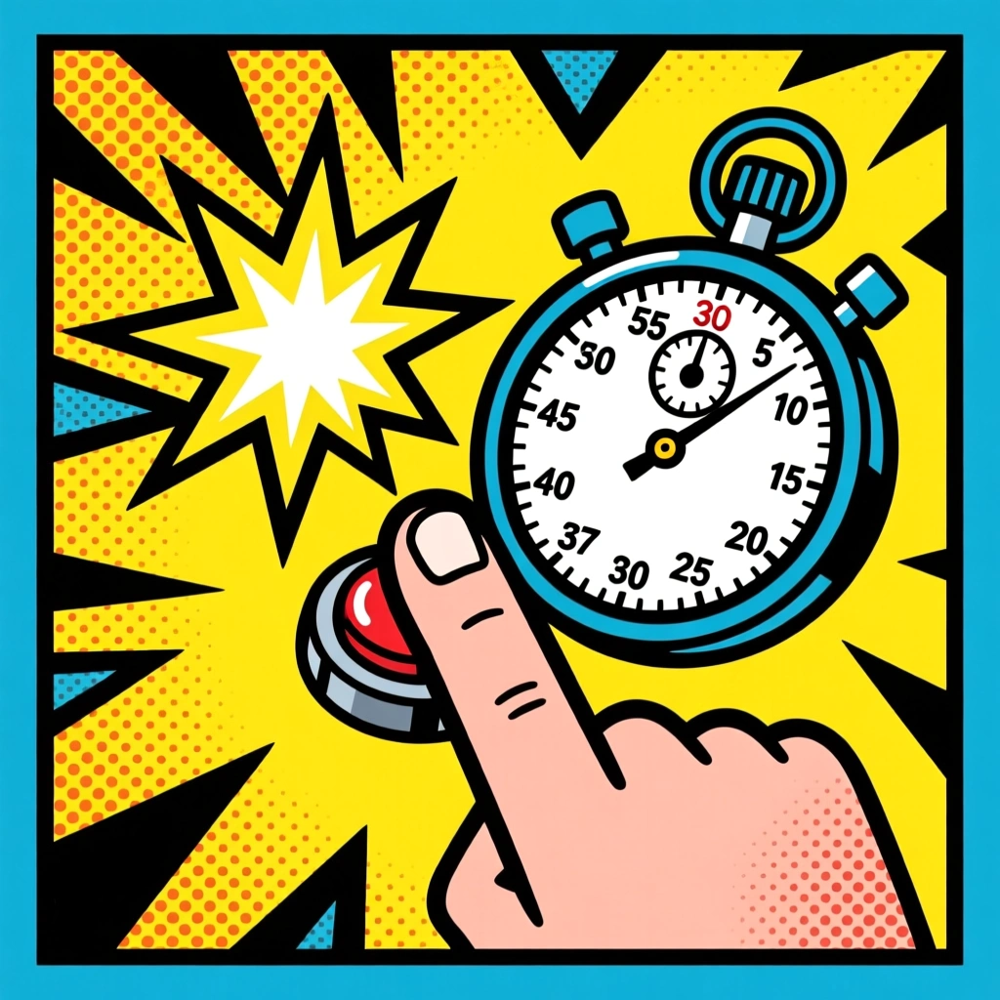
Drag to the longest response delay that still feels 'instant'.
拖到「仍感觉即时」的最长反馈延迟。
- ✓ target 60–160ms (range 0–600)
WHY Up to ~0.1s feels instant. Past that it starts to feel laggy.
约 0.1 秒内感觉即时，超过就开始觉得卡。
#5
SOCIAL
ADVANCED🎮 DRAG
D3
Sort each notification: healthy or spammy?
给每条通知分类：健康还是骚扰？
- [HEALTHY] Triggered by a real person acting on your stuff真人对你的内容操作触发
- [HEALTHY] From a real friend, deduped来自真朋友、已去重
- [SPAMMY] Notifies you about your own actions因你自己的操作通知你
- [SPAMMY] Repeats every minute regardless不论如何每分钟重复
WHY Healthy = real others' actions, self-guarded & deduped. Spammy = self-notify or repeats.
健康=真人他者操作+自守卫去重；骚扰=自我通知或重复轰炸。
#6
INTERACTION
BASIC🎮 SLIDER
S1
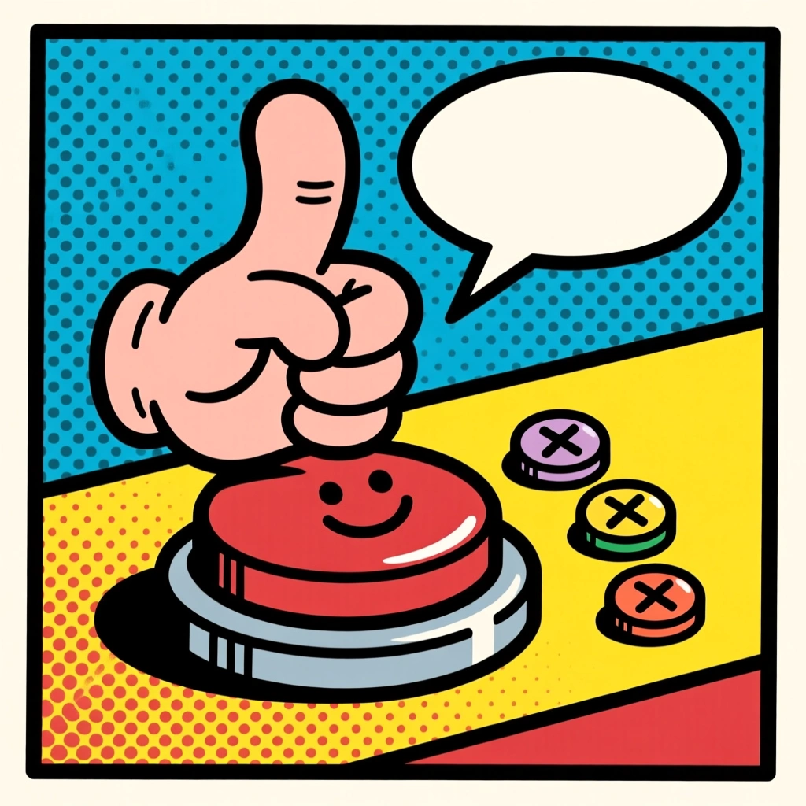
Drag to size a button so it's comfy to tap with a thumb.
拖动，把按钮调到拇指点着舒服的大小。
- ✓ target 44–72px (range 16–96)
WHY ~44px is the comfy minimum tap target — big enough that thumbs don't miss.
约 44px 是舒适的最小点击目标——大到拇指不会按偏。
#7
CORE DESIGN
ADVANCED🎮 SLIDER
S2
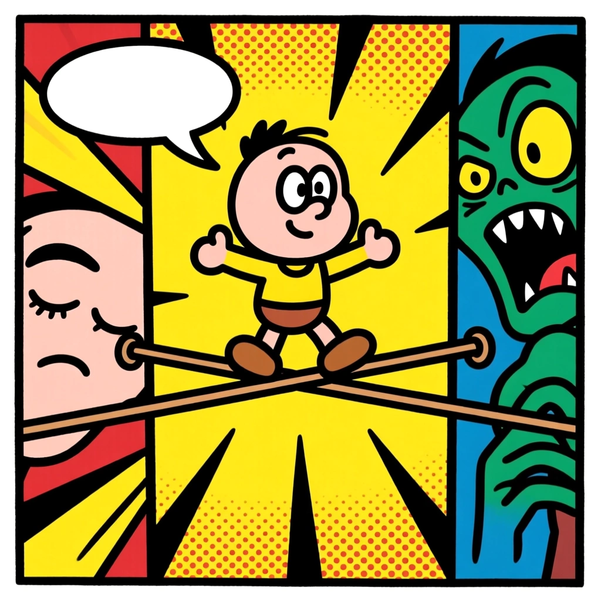
Slide the difficulty into the 'flow' sweet spot — watch the face.
把难度滑到「心流」甜区——看表情找。
- ✓ target 40–68 (range 0–100)
WHY Flow lives just above your skill — not bored, not panicked.
心流就在略高于你技能的地方——不无聊、不慌。
#8
FEED UX
BASIC🎮 DRAG
D1
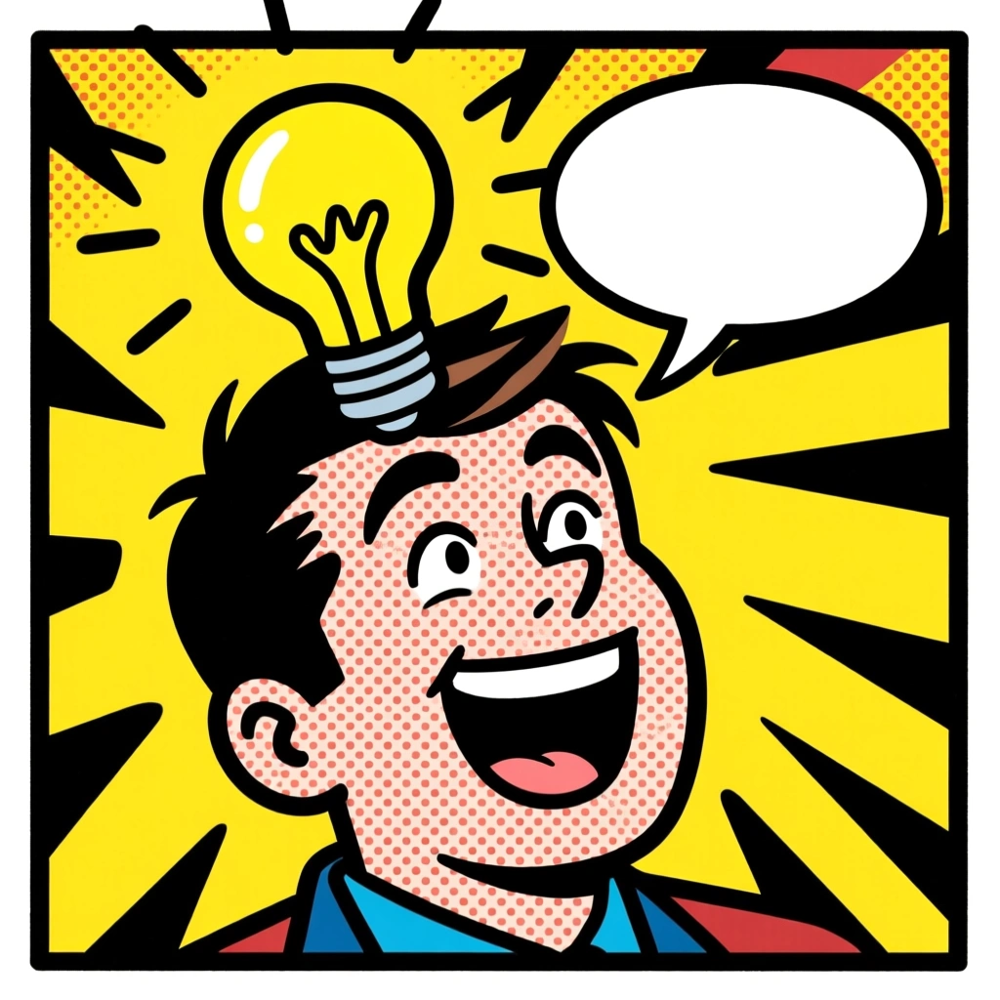
Drag what makes a feed game graspable in seconds vs what adds friction.
把"让 feed 游戏秒懂"的拖去左边，"添堵"的拖去右边。
- [GRASPABLE] No rules to learn没有规则要学
- [GRASPABLE] Self-explanatory UI自解释的界面
- [GRASPABLE] Instant feedback on tap点击即时反馈
- [FRICTION] Forced settings step强制设置步骤
- [FRICTION] Required signup强制注册
WHY No rules, self-explanatory visuals and instant feedback win; settings and signups kill it before the fun.
无规则、自解释、即时反馈取胜；设置和注册在乐趣前劝退。
#9
SOCIAL
ADVANCED🎮 DRAG
D2
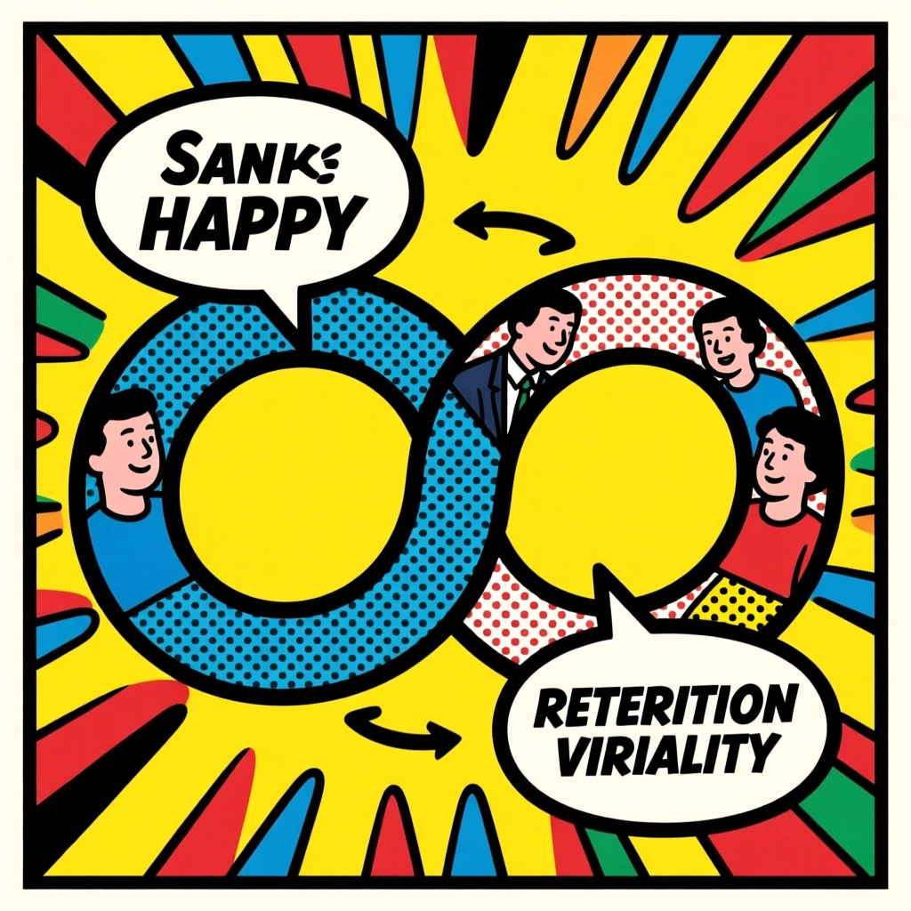
Sort each loop: does it bring the SAME user back, or bring NEW users in?
给每个循环分类：是把同一个用户拉回来，还是带来新用户？
- [RETENTION] Daily streak reminder每日连击提醒
- [RETENTION] "You got passed!" ping"你被超了"提醒
- [VIRALITY] Invite-a-friend reward邀请好友奖励
- [VIRALITY] Share your result分享你的成绩
WHY Retention = come back (streaks, rivalry pings). Virality = bring a friend (invites, shares).
留存=回来（连击、对手提醒）；病毒=带人来（邀请、分享）。
#10
CORE DESIGN
BASIC
1.1
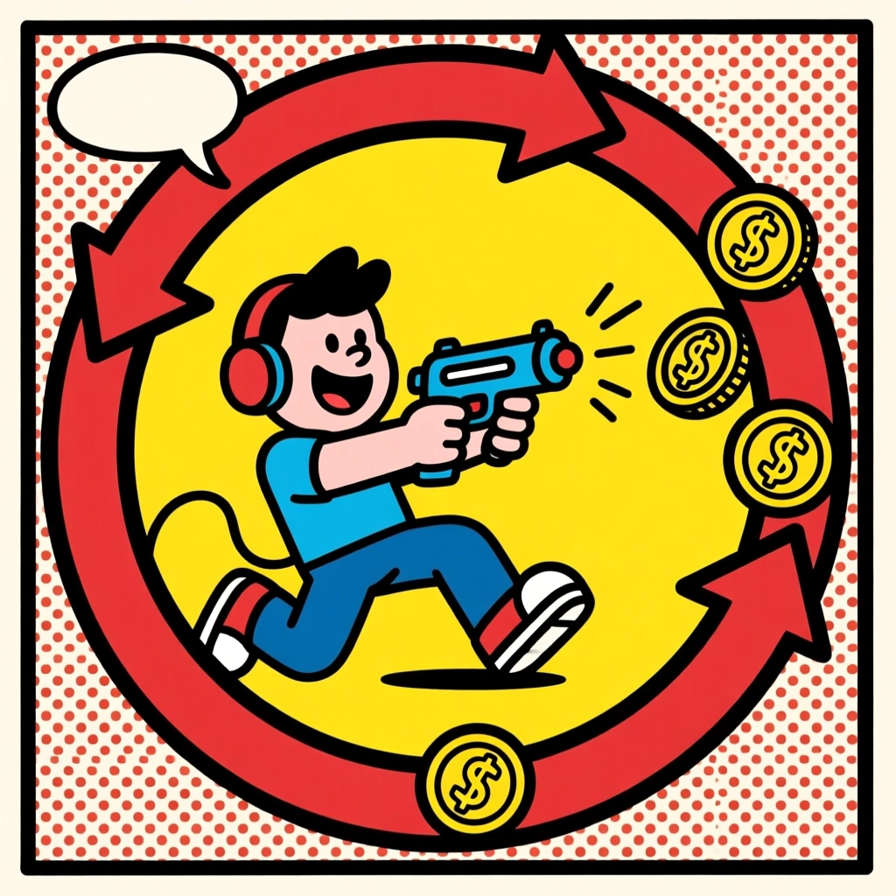
What is a game's "core loop"?
什么是游戏的「核心循环 (core loop)」？
- ✓ The short repeating sequence of actions a player does most of the time玩家绝大部分时间反复执行的那段短动作序列
- The opening cutscene that plays once只在开场播一次的过场动画
- The final boss fight最终 Boss 战
WHY Core loop = the do-it-again unit (aim→shoot→reward→repeat). Everything else wraps around it.
核心循环就是"再来一次"的最小单元，其余系统都包在它外面。
#11
CORE DESIGN
BASIC
1.2
A new player should ideally understand a scroll-feed mini-game within roughly…
在信息流里刷到的小游戏，新玩家理想情况下应在大约多久内看懂？
- ✓ A couple of seconds, with no tutorial几秒内，且不需要教程
- 2–3 minutes after reading instructions读完说明后 2–3 分钟
- After completing a settings step做完设置步骤之后
WHY Zero-context, near-zero patience: self-explanatory UI beats explanatory text.
零上下文、近乎零耐心，自解释的 UI 胜过解释性文案。
#12
CORE DESIGN
ADVANCED
1.3
Which reward schedule tends to be the most engaging (and habit-forming)?
哪种奖励节奏通常最能吸引人（也最易养成习惯）？
- ✓ Variable / intermittent reward可变（间歇）奖励
- Fixed reward every single action每个动作都给固定奖励
- No reward at all完全不给奖励
WHY Variable ratio reinforcement is the strongest driver of repeat behavior.
可变比率强化是重复行为最强的驱动力。
#13
CORE DESIGN
ADVANCED
1.4
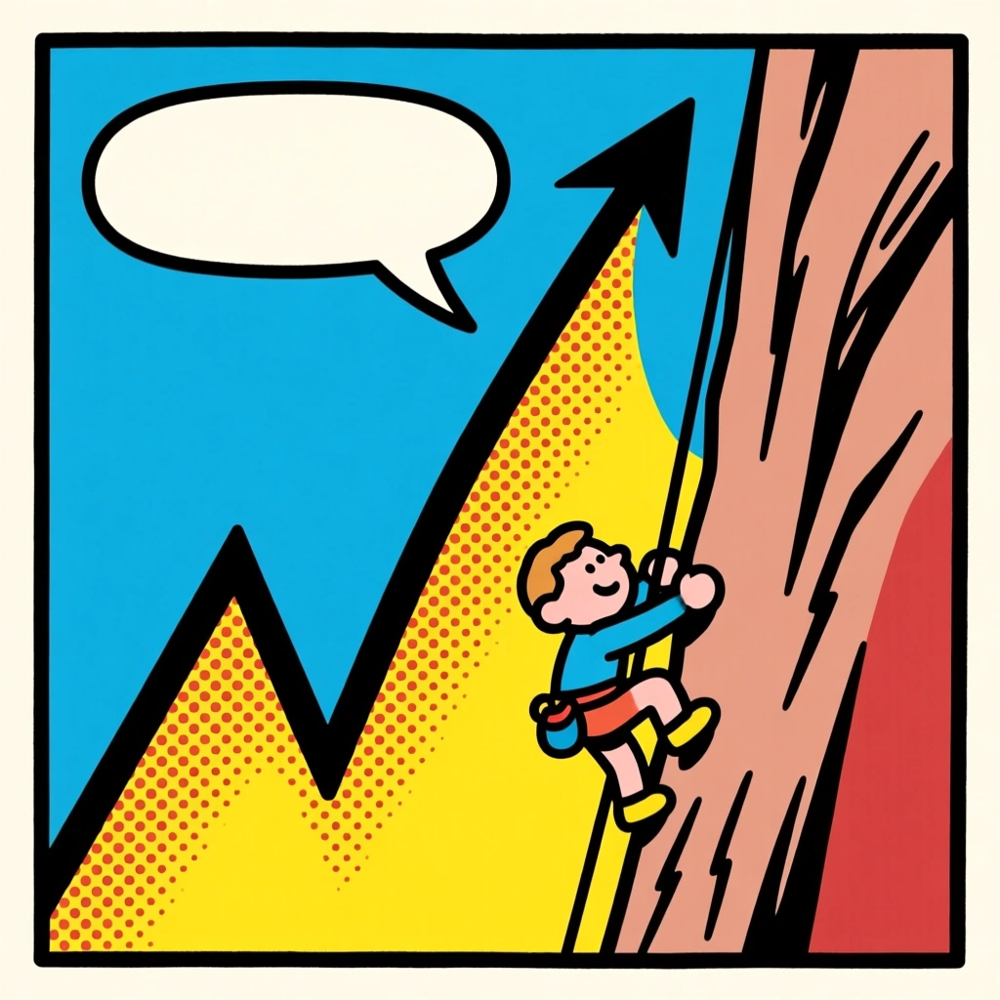
"Difficulty curve" problems most often show up as…
「难度曲线」问题最常表现为……
- ✓ A sudden spike or a flat boring stretch突然的陡峰，或一段平坦无聊的区间
- Too many color choices颜色选项太多
- A long credits sequence过长的结算名单
WHY Good pacing ramps challenge smoothly; spikes frustrate, flats bore.
好的节奏让难度平滑爬升；陡峰让人挫败，平坦让人无聊。
#14
CORE DESIGN
BASIC
1.5
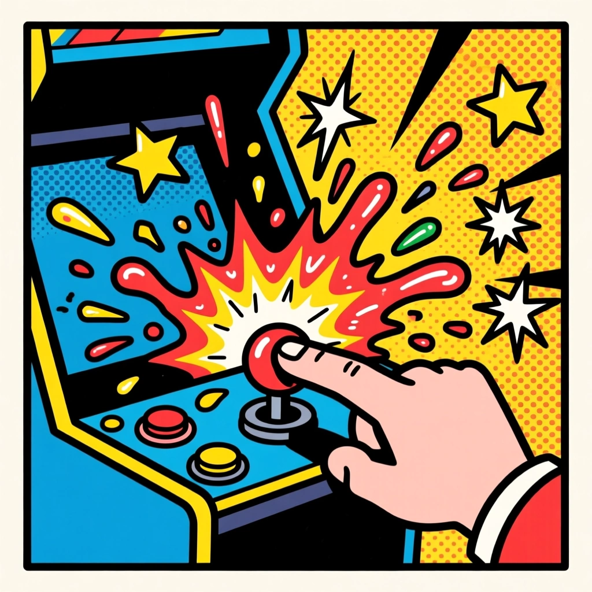
"Game feel" / "juice" mainly refers to…
「手感 / juice」主要指……
- ✓ The immediate sensory feedback that makes actions feel satisfying让动作"爽"的即时感官反馈
- The price of the game游戏售价
- The number of levels关卡数量
WHY Juice = the layer of feedback (shake, particles, sound) on top of mechanics.
juice 是叠在机制之上的反馈层（震屏、粒子、音效）。
#15
CORE DESIGN
ADVANCED
1.6
"Flow state" is best sustained when challenge is…
当难度处于什么状态时，最能维持「心流 (flow)」？
- ✓ Balanced just above the player's current skill略高于玩家当前技能、保持平衡
- Far above the player's skill远高于玩家技能
- Far below the player's skill远低于玩家技能
WHY Too hard → anxiety, too easy → boredom; flow sits in between.
太难→焦虑，太易→无聊，心流在两者之间。
#16
CORE DESIGN
BASIC
1.7
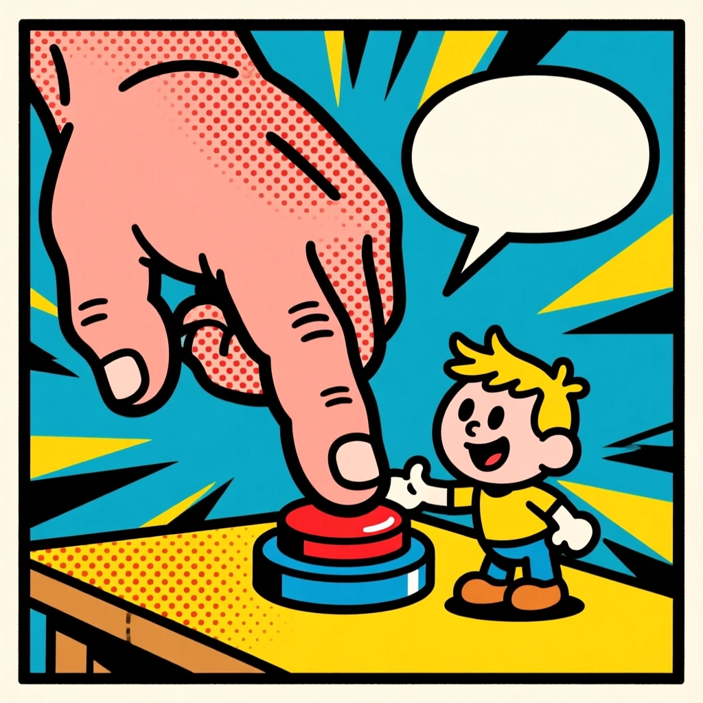
The best way to teach a game's first mechanic is usually…
教会玩家游戏第一个机制，通常最好的方式是……
- ✓ Let them do it once in a safe, guided moment (learning by doing)在安全、被引导的瞬间让他们先做一次（做中学）
- Show a long text tutorial first先看一大段文字教程
- Make them watch a 2-minute video让他们看 2 分钟视频
WHY Learning by doing beats reading; a guided first success teaches fastest.
做中学胜过阅读，一次被引导的成功最快教会人。
#17
CORE DESIGN
BASIC
1.8
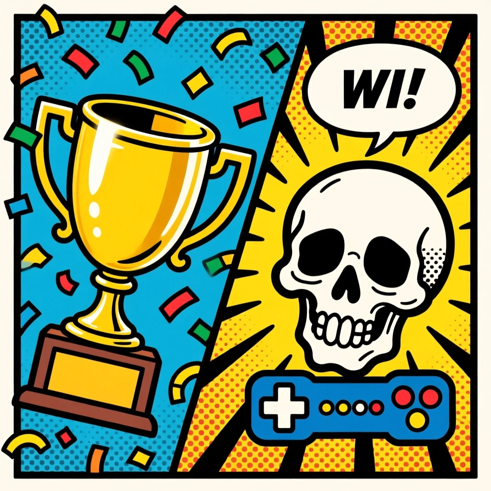
Win and lose states in a game should be…
游戏的胜利/失败状态应当……
- ✓ Immediately clear and unambiguous to the player对玩家即时、清晰、无歧义
- Subtle and easy to miss微妙、容易被忽略
- Only shown in a menu只在菜单里显示
WHY Players must always know if they're winning or losing — feedback drives action.
玩家必须随时知道自己是赢是输——反馈驱动行动。
#18
INTERACTION
BASIC
2.1
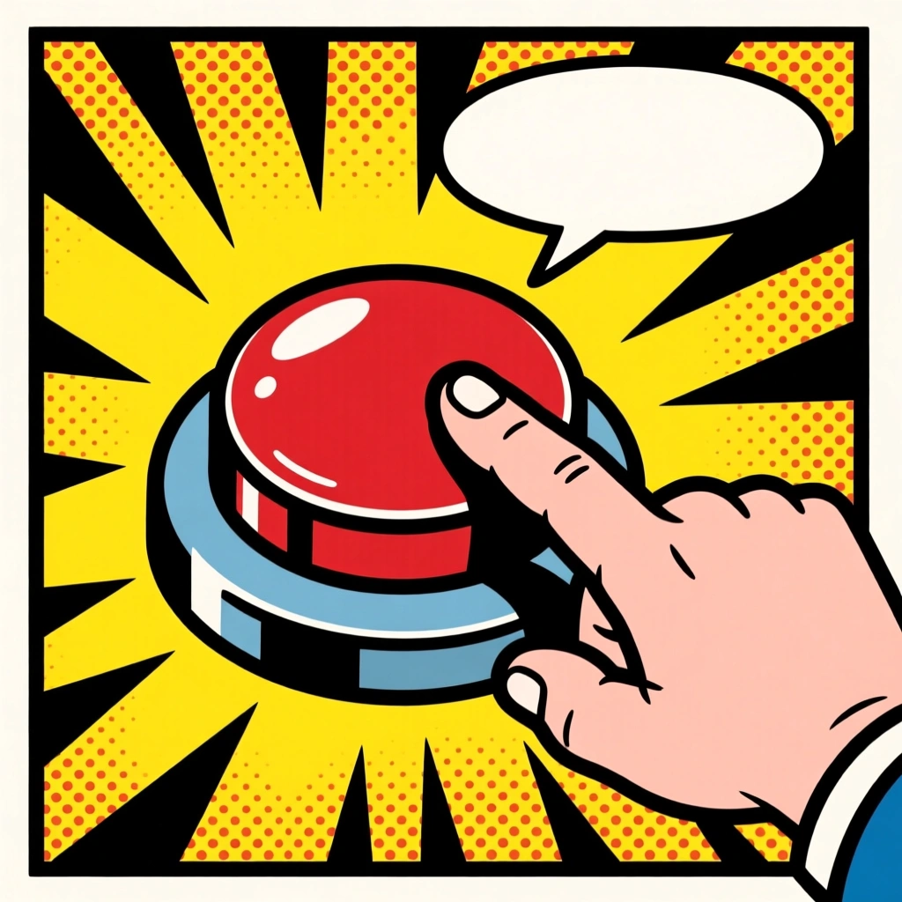
An "affordance" in UI design is…
UI 设计中的「可供性 (affordance)」是指……
- ✓ A property that suggests how an element can be used暗示元素该如何被使用的属性
- The cost of a feature某功能的成本
- A loading animation加载动画
WHY A button that looks pressable affords pressing. Signifiers make affordances visible.
看起来能按的按钮就"可供"按压；signifier 让可供性可见。
#19
INTERACTION
ADVANCED
2.2
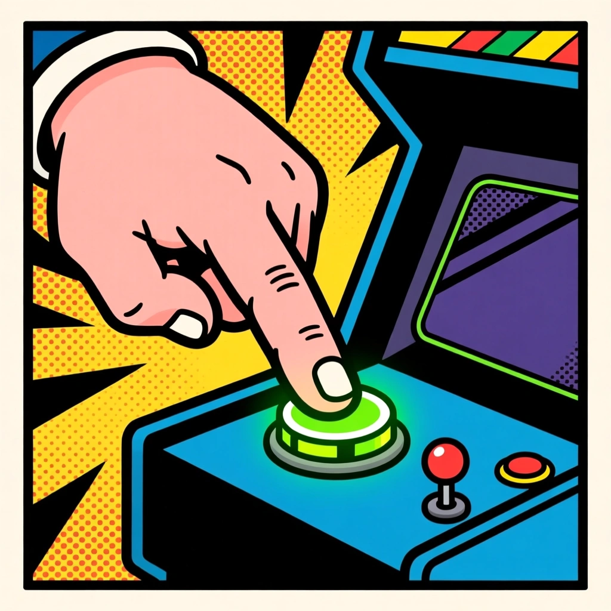
Fitts's Law implies that a tap target should be…
Fitts 定律意味着点击目标应当……
- ✓ Bigger and/or closer to be faster to hit更大、更近，从而更快命中
- Always in the exact center永远放在正中心
- The same color as the background跟背景同色
WHY Time to target ∝ distance / size. Big, near targets are fast.
命中时间正比于距离/尺寸，大而近的目标更快。
#20
INTERACTION
ADVANCED
2.3
Hick's Law suggests that adding more options to a menu…
Hick 定律表明，给菜单增加更多选项会……
- ✓ Increases the time to decide增加做决定的时间
- Has no effect on decision time对决策时间没有影响
- Always improves usability总能提升可用性
WHY Decision time grows with the number of choices — fewer, clearer options win.
决策时间随选项数量增长——更少更清晰的选项更优。
#21
INTERACTION
BASIC
2.4
On touch screens, a comfortable minimum tap-target size is roughly…
触屏上，舒适的最小点击目标尺寸大约是……
- ✓ 44 px (~iOS HIG)44 像素（约 iOS 规范）
- 8 px8 像素
- 16 px16 像素
WHY ~44pt/48dp is the common floor so fingers don't mis-tap.
约 44pt/48dp 是常见下限，避免手指误触。
#22
INTERACTION
ADVANCED
2.5
Roughly how long can UI feedback be delayed before it stops feeling "instant"?
UI 反馈延迟大约超过多少，就不再感觉是「即时」的？
- ✓ ~100 ms约 100 毫秒
- ~1 second约 1 秒
- ~3 seconds约 3 秒
WHY ~0.1s feels instant; ~1s keeps flow; >10s loses attention.
约 0.1 秒感觉即时，约 1 秒维持心流，超 10 秒注意力流失。
#23
INTERACTION
ADVANCED
2.6
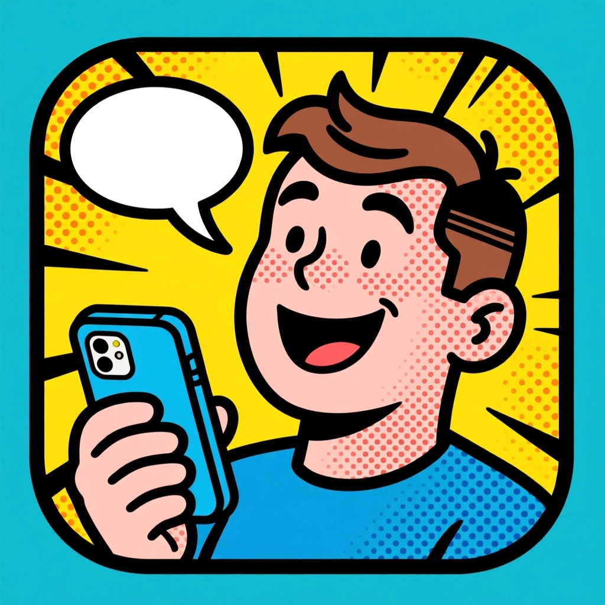
Jakob's Law states that users…
Jakob 定律指出，用户……
- ✓ Expect your product to work like the other products they already know期望你的产品像他们已熟悉的其他产品一样运作
- Always prefer brand-new interaction patterns总是偏好全新的交互模式
- Never read any text从不读任何文字
WHY Lean on familiar conventions; novelty for its own sake costs usability.
借力熟悉的约定，为新而新会牺牲可用性。
#24
INTERACTION
BASIC
2.7
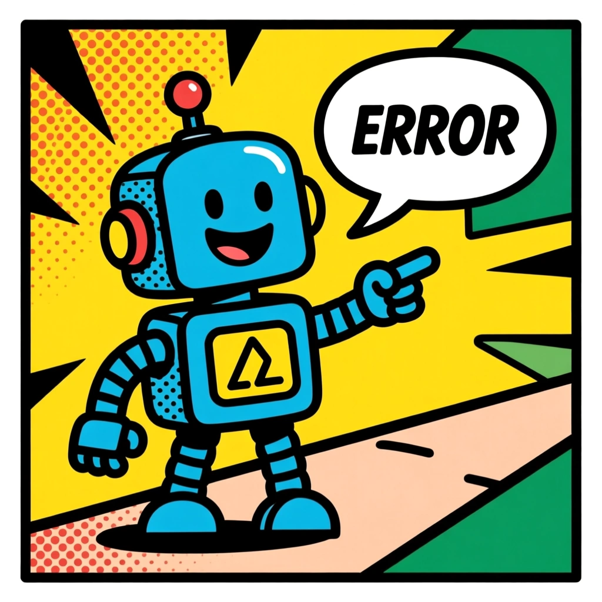
A good error message should mainly…
一条好的错误提示主要应当……
- ✓ Explain what happened and how to recover说明发生了什么以及如何恢复
- Blame the user责怪用户
- Show a raw error code only只显示一串原始错误码
WHY Errors should be clear, blameless, and recoverable.
错误提示应清晰、不指责、可恢复。
#25
GAME FEEL
BASIC
3.1
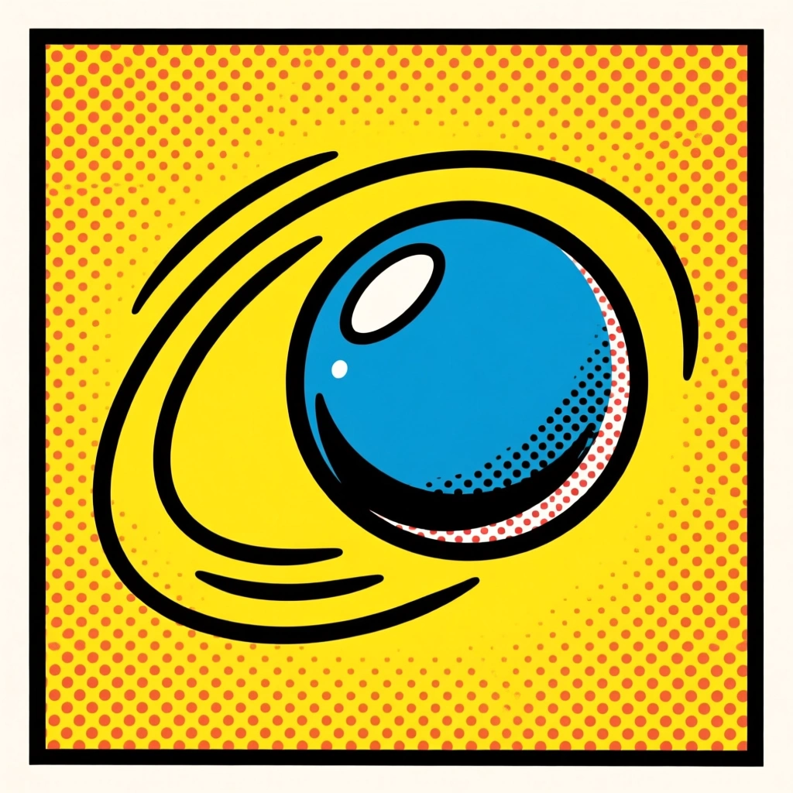
"Easing" in animation refers to…
动画里的「缓动 (easing)」是指……
- ✓ Varying speed over time instead of moving linearly速度随时间变化，而非匀速直线运动
- Lowering the resolution降低分辨率
- Muting the sound静音
WHY Ease-in/out makes motion feel natural; linear feels robotic.
缓入缓出让运动自然，匀速显得机械。
#26
GAME FEEL
BASIC
3.2
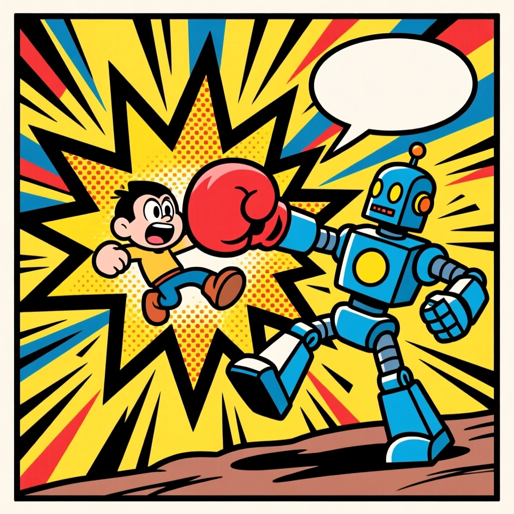
"Screenshake" is mainly used to…
「震屏 (screenshake)」主要用来……
- ✓ Amplify the sense of impact放大打击/冲击感
- Save battery省电
- Reduce file size减小文件体积
WHY A few frames of shake on impact sells weight and force.
命中瞬间几帧抖动能传达重量与力量。
#27
GAME FEEL
ADVANCED
3.3
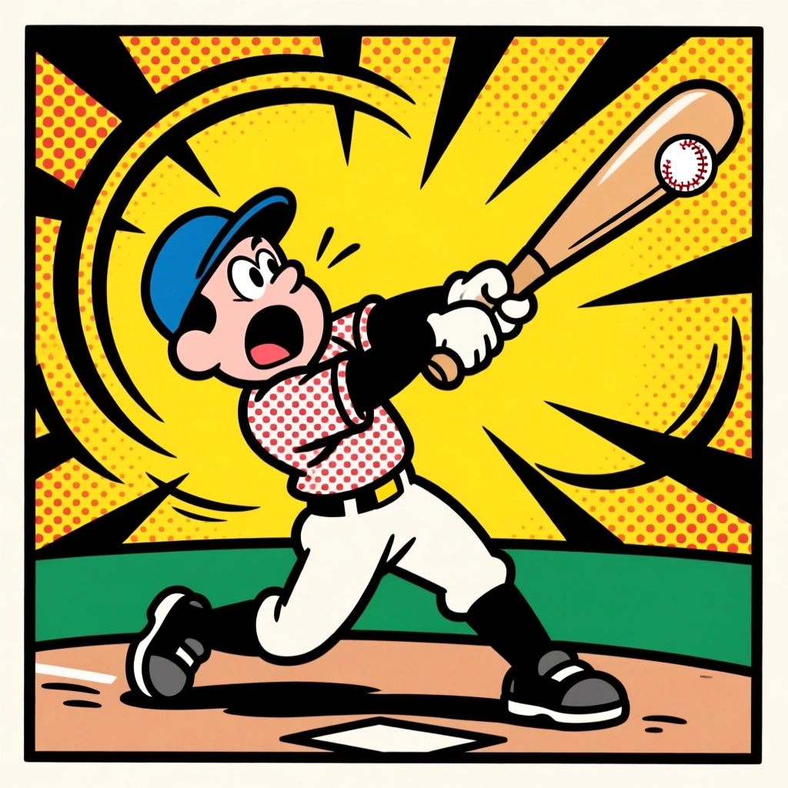
Anticipation and follow-through (12 animation principles) help by…
预备动作与跟随动作（动画 12 原则）的作用是……
- ✓ Making motion read clearly and feel weighty让运动易读、有重量感
- Increasing the polygon count增加多边形数量
- Encrypting the assets加密资源
WHY A small wind-up + overshoot makes actions legible and alive.
小幅蓄力+回弹让动作清晰且有生命力。
#28
GAME FEEL
ADVANCED
3.4
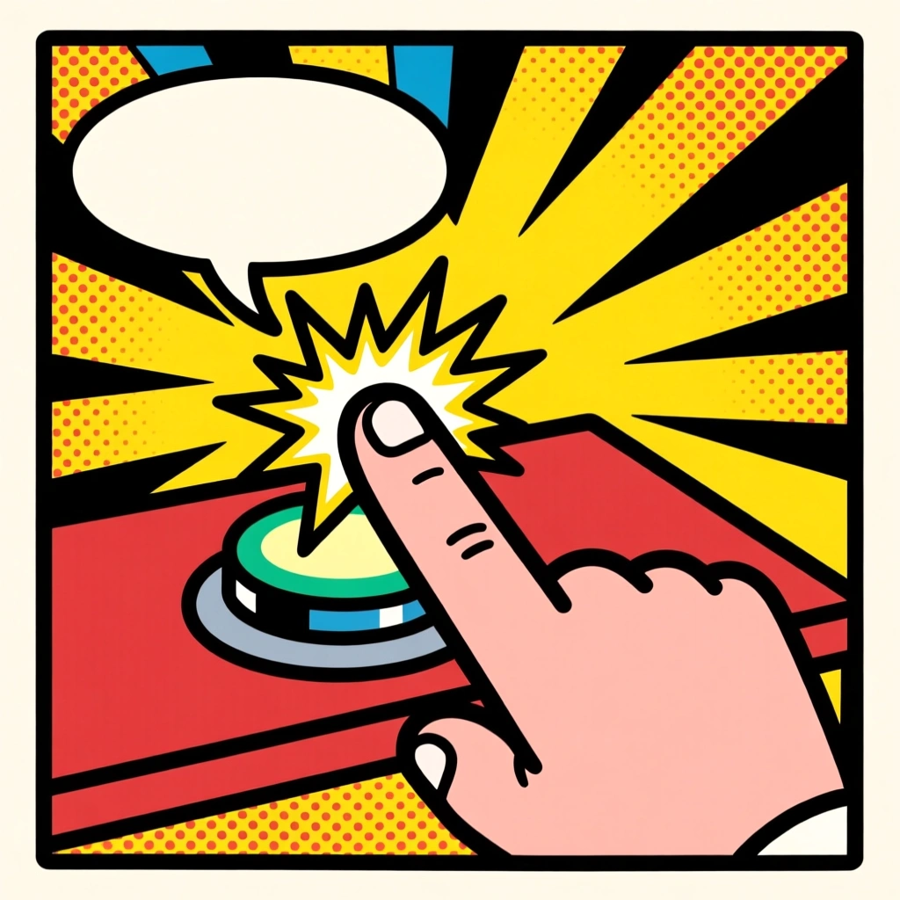
When should you give immediate audio/visual feedback for a tap?
点击操作的音/画反馈应在何时给出？
- ✓ On the press, before the result resolves在按下那一刻，先于结果产生
- Only after a network round-trip等网络往返之后
- Only at the end of the session只在整局结束时
WHY Instant feedback on press confirms the input even if the result lags.
按下即反馈，即使结果有延迟也先确认了输入。
#29
GAME FEEL
ADVANCED
3.5
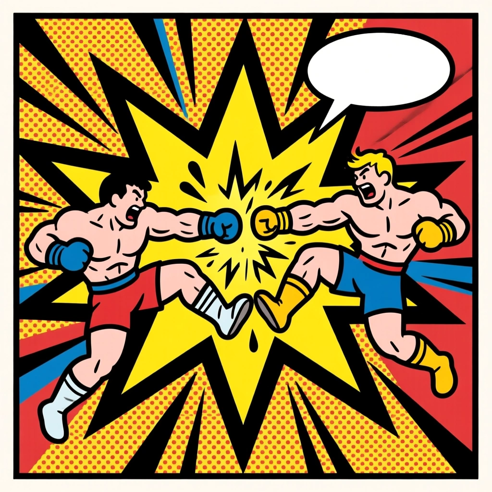
"Hit-stop" (a brief freeze on impact) is used to…
「顿帧 (hit-stop)」（命中瞬间短暂定格）用来……
- ✓ Emphasize the weight and impact of a hit强调一次命中的重量与冲击
- Save memory节省内存
- Hide a bug掩盖 bug
WHY A few frames of freeze on impact makes hits feel powerful.
命中时定格几帧，让打击感更有力量。
#30
GAME FEEL
BASIC
3.6
Particle effects in games primarily serve to…
游戏里的粒子特效主要用来……
- ✓ Reinforce feedback and make events feel alive强化反馈、让事件更有生命力
- Increase the download size on purpose故意增大下载体积
- Replace the core mechanic取代核心机制
WHY Particles are feedback garnish — they amplify, they aren't the dish.
粒子是反馈的点缀——用来放大，而非主菜。
#31
FEED UX
BASIC
4.1
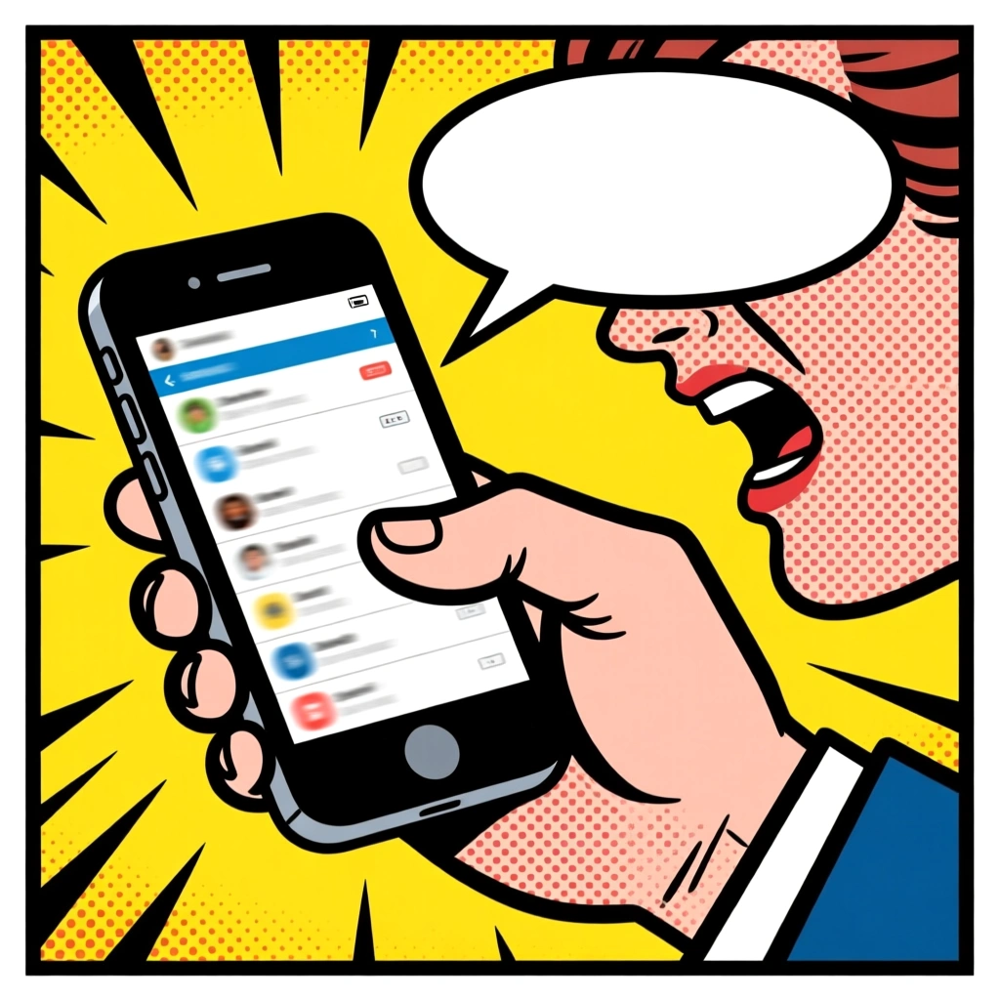
Designing for a vertical scroll-feed, you should assume the user…
为竖向信息流设计时，应假设用户……
- ✓ Arrives with zero context and almost no patience带着零上下文、近乎零耐心进来
- Has read a manual first已经先读过说明书
- Will replay daily without prompting会每天主动回访
WHY No rules to learn, no choices before play, instant feedback.
没有要学的规则，玩前不做选择，即点即有反馈。
#32
FEED UX
BASIC
4.2
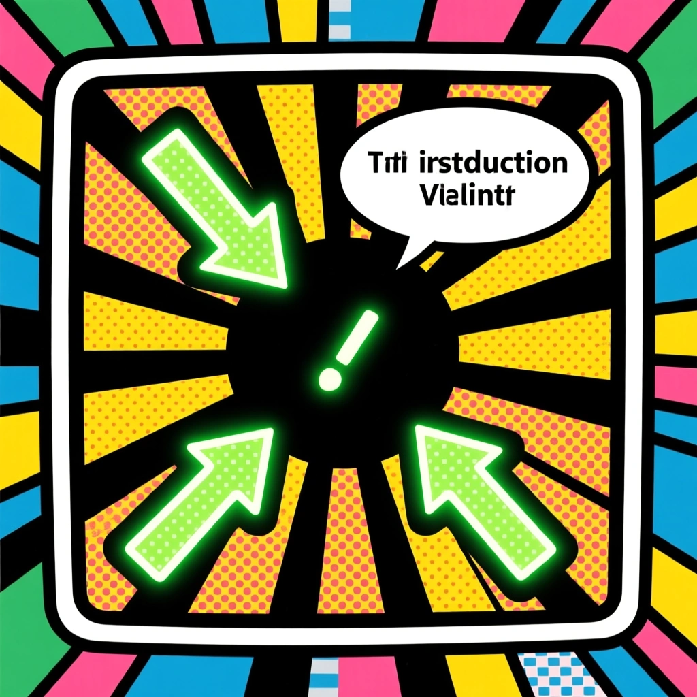
A "self-explanatory UI" means…
「自解释的 UI」意味着……
- ✓ The interface teaches itself through visuals, not text walls界面靠视觉自我教学，而非大段文案
- It comes with a long PDF manual配一份长 PDF 手册
- It requires a video tutorial需要看视频教程
WHY Show, don't tell — affordances over instructions.
用展示代替讲解，可供性优于说明文字。
#33
FEED UX
ADVANCED
4.3
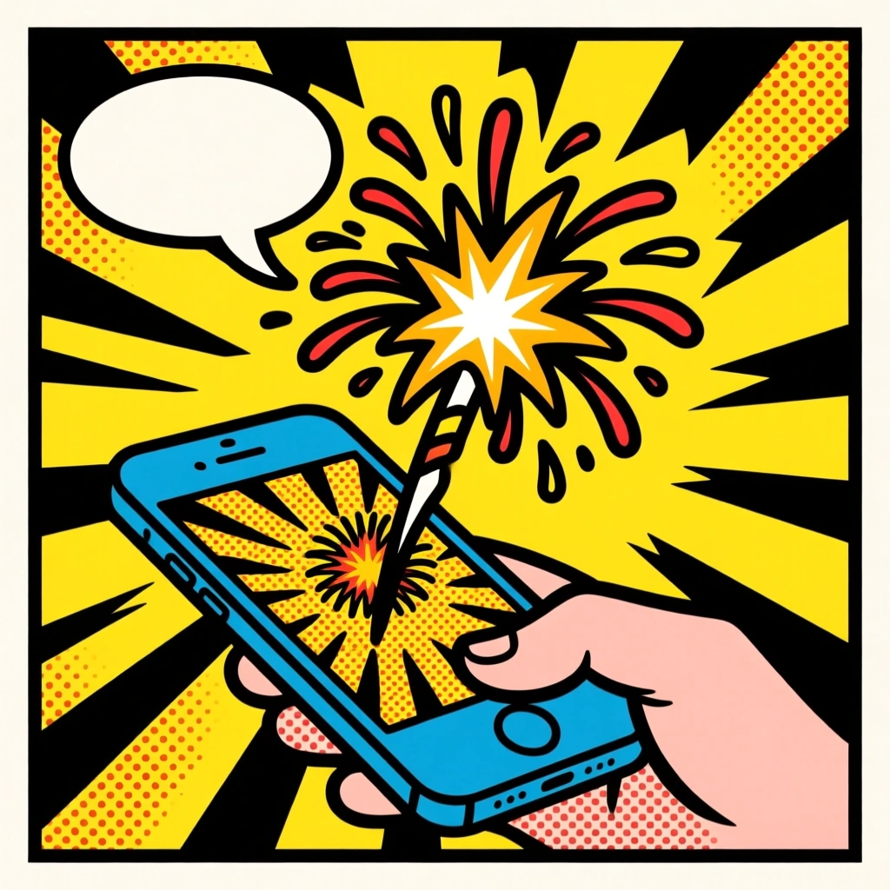
For a feed mini-game, designing for "one-shot" play rather than retention means…
为信息流小游戏做「一次性」而非「留存」设计，意味着……
- ✓ The first encounter must be complete and satisfying on its own第一次相遇本身就要完整且满足
- Locking content behind daily streaks用每日连击锁住内容
- Requiring an account to start开始前要求注册
WHY Assume no return visit; make the single session pay off.
别假设回访，让单局本身就值回票价。
#34
FEED UX
BASIC
4.5
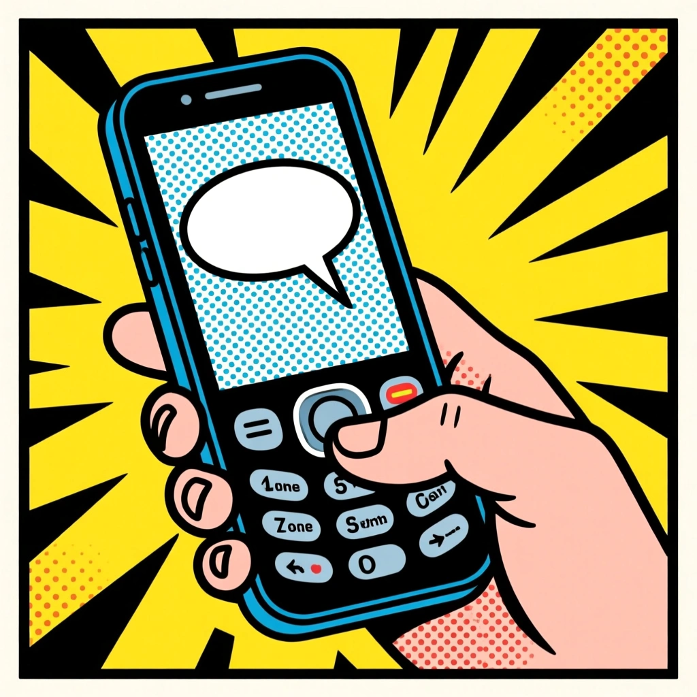
On a large phone held one-handed, the easiest area for the thumb to reach is…
单手握持大屏手机时，拇指最易触达的区域是……
- ✓ The lower-center of the screen屏幕的下方中部
- The top corners顶部两角
- The very top edge最顶边
WHY Put primary actions in the thumb zone (bottom), not the top corners.
把主要操作放在拇指区（底部），别放顶角。
#35
FEED UX
ADVANCEDMULTI
4.6
Which of these make a feed mini-game graspable in seconds? (Select all)
以下哪些能让信息流小游戏在几秒内被看懂？（多选）
- ✓ No rules to learn before playing玩之前没有规则要学
- ✓ Self-explanatory, visual UI自解释的视觉化 UI
- ✓ Instant feedback on the first tap第一次点击就有即时反馈
- A mandatory settings step first先来一个强制设置步骤
- A required signup强制注册
WHY The first three reduce time-to-understand; settings and signup add friction before the fun.
前三项缩短理解时间，设置和注册在乐趣前增加摩擦。
#36
SOCIAL
BASIC
6.1
In a UGC social game, "a feed needs a verb" means…
UGC 社交游戏里「feed needs a verb（信息流需要一个动词）」是指……
- ✓ Viewers need an action to take on content, which notifies the author观众需要一个能对内容施加的动作，且会通知作者
- Every post must contain a verb in its title每条内容标题里必须含动词
- The feed should scroll automatically信息流应自动滚动
WHY A passive feed dies; a verb (kept/popped/remixed) creates a loop back to the author.
纯被动的 feed 会死，一个动词会把价值回流给作者，形成循环。
#37
SOCIAL
ADVANCED
6.2
A healthy social notification (e.g. "X reacted to your work") should…
一条健康的社交通知（如「X 对你的作品有反应」）应当……
- ✓ Be triggered by another real user acting on your content, with self-guard & dedupe由其他真实用户对你的内容操作触发，并做自我屏蔽与去重
- Be sent to yourself for your own actions因你自己的操作而发给自己
- Repeat every minute regardless of activity不论是否有活动每分钟重复
WHY Notify on others' actions; never self-notify; never fake users.
因他人操作而通知，不自我通知，不用假用户。
#38
SOCIAL
ADVANCED
6.3
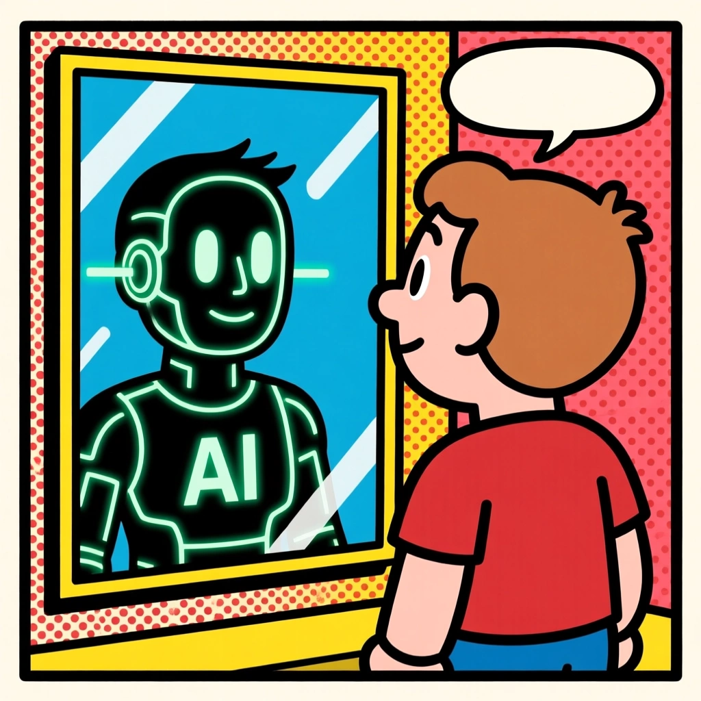
For a social game's cold-start (no real users yet), the best fallback is…
社交游戏冷启动（还没有真实用户）时，最佳兜底是……
- ✓ A real subject that needs no fake identity (e.g. "you vs. your AI self")不需要假身份的真实主体（如「你 vs 你的 AI 分身」）
- Auto-generated fake user profiles自动生成的假用户资料
- An empty screen一个空白屏
WHY Fake users are dead-ends that expose the fake; use a real, safe subject.
假用户是会暴露的死路，用真实、安全的主体兜底。
#39
SOCIAL
BASIC
6.4
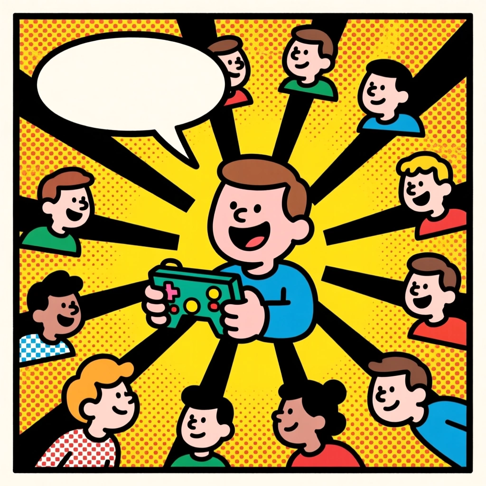
"Virality" in a product loop usually comes from…
产品循环里的「病毒性」通常来自……
- ✓ Each user's action naturally surfacing the product to new users每个用户的行为自然把产品带到新用户面前
- Buying more ads买更多广告
- A bigger app icon更大的应用图标
WHY Built-in sharing as a side effect of normal use beats paid acquisition.
把分享内建为正常使用的副产品，胜过付费获取。
#40
SOCIAL
BASIC
6.5
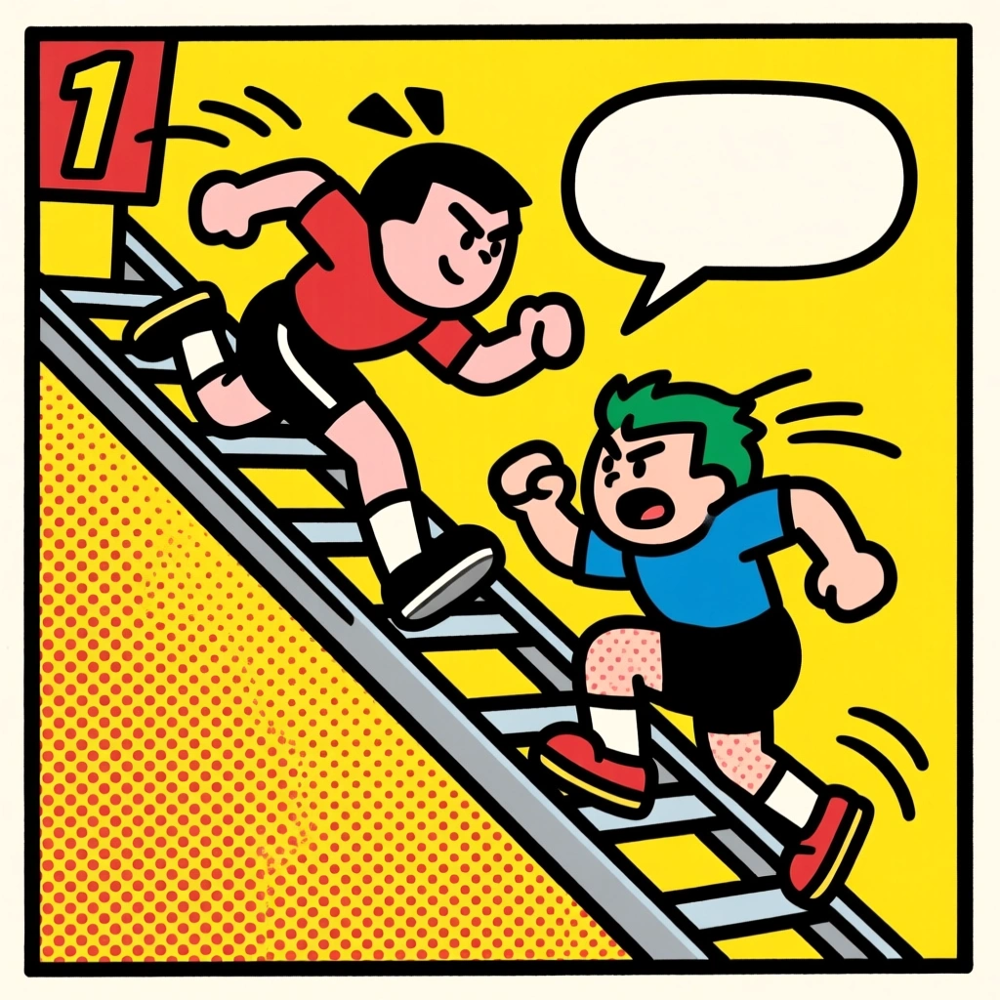
A "leaderboard rivalry" notification (e.g. "X just beat your score") works because it…
「排行榜对手」通知（如「X 刚超过了你的分数」）有效，是因为它……
- ✓ Gives the beaten player a reason to come back and reclaim their spot给被超过的玩家一个回来夺回名次的理由
- Spams everyone equally平等地骚扰所有人
- Hides the score隐藏分数
WHY Competition + a personal stake pulls the rival back into the loop.
竞争+切身利害把对手重新拉回循环。
#41
SOCIAL
ADVANCED
6.6
Retention and virality differ in that…
留存与病毒性的区别在于……
- ✓ Retention brings the same users back; virality brings new users in留存让同一批用户回来，病毒性带来新用户
- They mean exactly the same thing二者意思完全相同
- Virality only matters for paid ads病毒性只对付费广告有意义
WHY Different loops: retention = come-back, virality = bring-a-friend.
两套循环：留存=回来，病毒性=带朋友来。